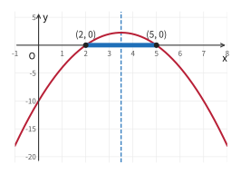
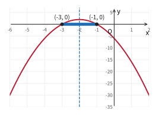
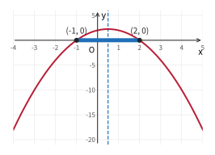

別冊練習問題 8 の解答 解から別の2次不等式の解を求める
(1) \(ax^2+bx+c>0\) の解が \(2<x<5\) であるとき、\(cx^2+bx+a<0\) の解を求めよ。
\(b,\ c\) を \(a\) で表す
解が \(2<x<5\) なので \(a<0\)、2解は \(2,\ 5\)。
\[ax^2+bx+c=a(x-2)(x-5)\ \text{と書ける}\]\[=ax^2-a(2+5)x+a\cdot2\cdot5\]\[b=-a(2+5)=-7\,a,\qquad c=a\cdot2\cdot5=10\,a\]\(ax^2+bx+c>0\) の解（放物線が \(x\) 軸より上の部分）が太線。上に凸なので \(a<0\)。

新しい不等式に代入
\(cx^2+bx+a<0\) を \(a\) でわる。\(a<0\) なので不等号の向きが逆になる。
\[10x^2-7x+1>0\]因数分解して解く
\(10 x^{2} - 7 x + 1=(2x-1)(5x-1)\)。2解は \(x=\dfrac{1}{2},\ \dfrac{1}{5}\)。\(x^2\) の係数 \(10\) が正なので
\[x<\dfrac{1}{5},\ \ x>\dfrac{1}{2}\]【答案】
\[x<\dfrac{1}{5},\ \ x>\dfrac{1}{2}\]答
(2) \(ax^2+bx+c>0\) の解が \(-3<x<-1\) であるとき、\(cx^2+bx+a<0\) の解を求めよ。
\(b,\ c\) を \(a\) で表す
解が \(-3<x<-1\) なので \(a<0\)、2解は \(-3,\ -1\)。
\[ax^2+bx+c=a(x-\left(-3\right))(x-\left(-1\right))\ \text{と書ける}\]\[=ax^2-a(-3+\left(-1\right))x+a\cdot\left(-3\right)\cdot\left(-1\right)\]\[b=-a(-3+\left(-1\right))=4\,a,\qquad c=a\cdot\left(-3\right)\cdot\left(-1\right)=3\,a\]\(ax^2+bx+c>0\) の解（放物線が \(x\) 軸より上の部分）が太線。上に凸なので \(a<0\)。

新しい不等式に代入
\(cx^2+bx+a<0\) を \(a\) でわる。\(a<0\) なので不等号の向きが逆になる。
\[3x^2+4x+1>0\]因数分解して解く
\(3 x^{2} + 4 x + 1=(-3x-1)(-x-1)\)。2解は \(x=- \dfrac{1}{3},\ -1\)。\(x^2\) の係数 \(3\) が正なので
\[x<-1,\ \ x>- \dfrac{1}{3}\]【答案】
\[x<-1,\ \ x>- \dfrac{1}{3}\]答
(3) \(ax^2+bx+c>0\) の解が \(-1<x<2\) であるとき、\(cx^2+bx+a<0\) の解を求めよ。
\(b,\ c\) を \(a\) で表す
解が \(-1<x<2\) なので \(a<0\)、2解は \(-1,\ 2\)。
\[ax^2+bx+c=a(x-\left(-1\right))(x-2)\ \text{と書ける}\]\[=ax^2-a(-1+2)x+a\cdot\left(-1\right)\cdot2\]\[b=-a(-1+2)=-a,\qquad c=a\cdot\left(-1\right)\cdot2=-2\,a\]\(ax^2+bx+c>0\) の解（放物線が \(x\) 軸より上の部分）が太線。上に凸なので \(a<0\)。

新しい不等式に代入
\(cx^2+bx+a<0\) を \(a\) でわる。\(a<0\) なので不等号の向きが逆になる。
\[-2x^2-x+1>0\]因数分解して解く
\(- 2 x^{2} - x + 1=(-x-1)(2x-1)\)。2解は \(x=-1,\ \dfrac{1}{2}\)。\(x^2\) の係数 \(-2\) が負なので
\[-1<x<\dfrac{1}{2}\]【答案】
\[-1<x<\dfrac{1}{2}\]答